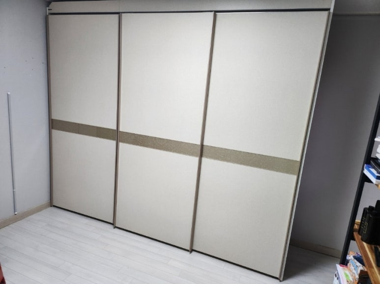
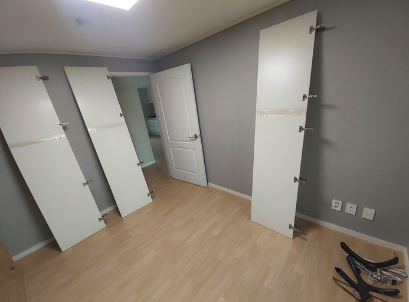
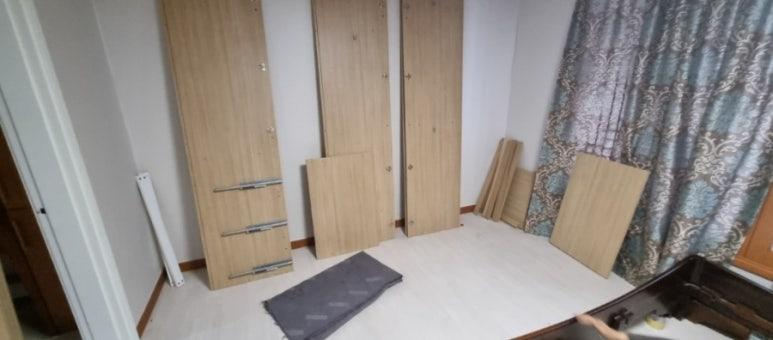
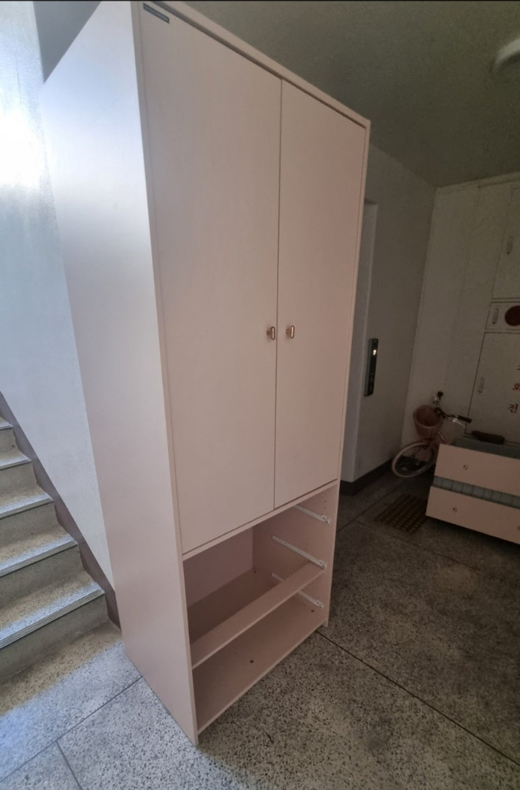
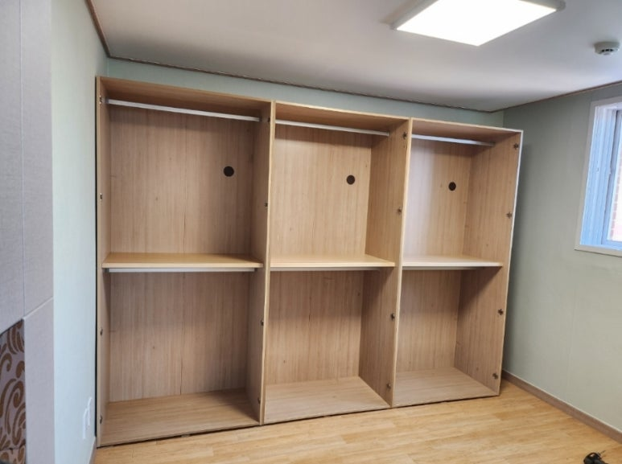
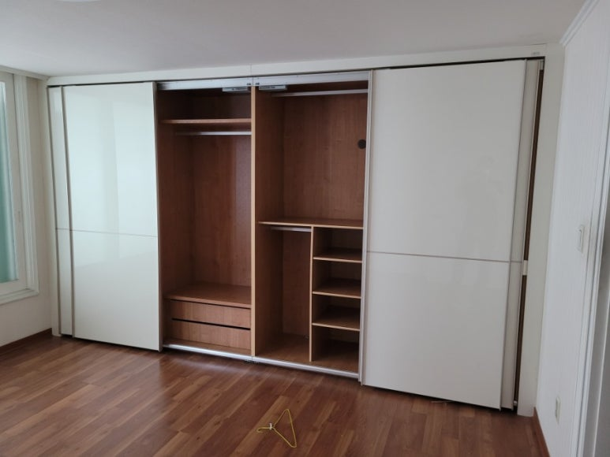
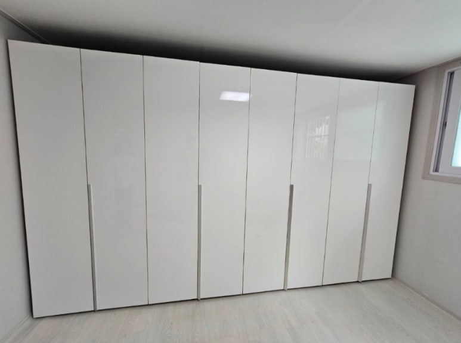
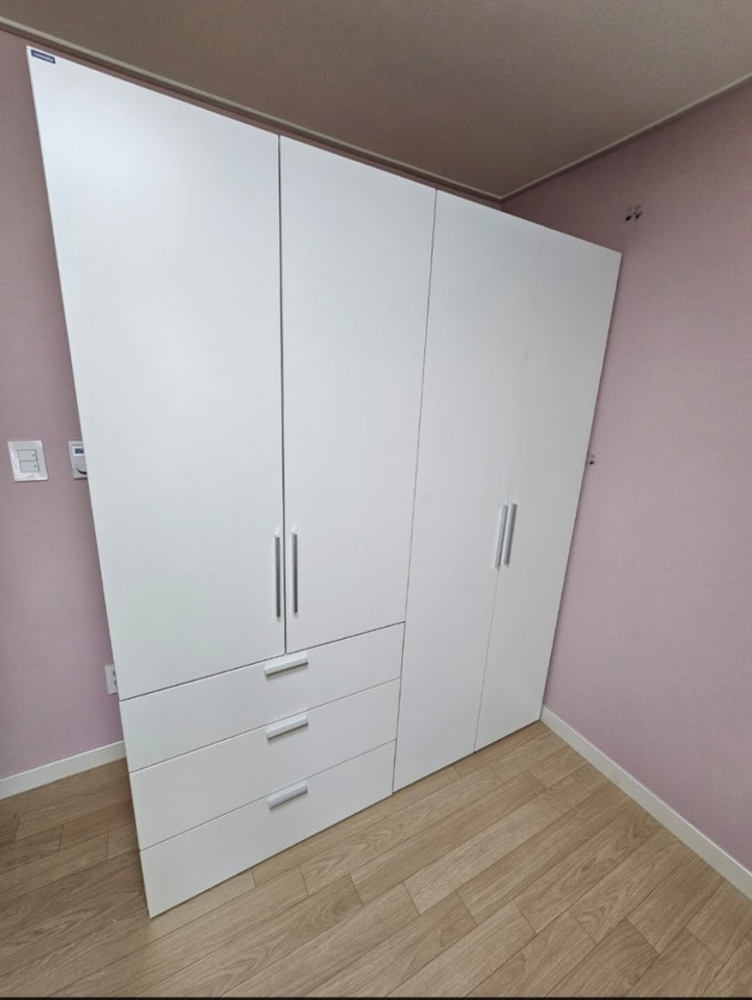
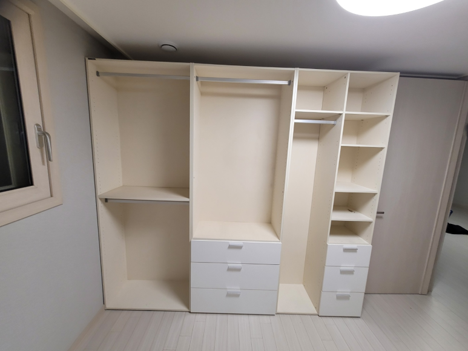
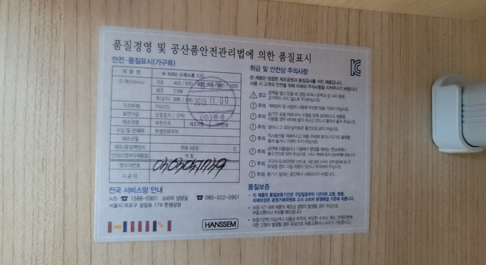

한샘 붙박이장 이전설치
옷장 해체부터 재설치까지
이사 날짜는 다가오는데 한샘 이전설치 일정이 맞지 않거나, 비용이 부담돼서 다른 방법을 찾고 계신가요? 코니처는 한샘 붙박이장과 옷장을 해체해서 옮기고, 새 집이나 다른 방에서 다시 조립해 드리는 가구이전설치 업체예요. 한샘 붙박이장 작업은 평균 10년 이상 경력의 지역 기사님이 직접 맡아요.

한샘 붙박이장·옷장 이전설치
1통 기준 10만 원부터
표시된 금액은 최소 시작 금액이에요. 가구 크기와 수량, 이전 거리, 층수, 엘리베이터 사용 여부 등 작업과 현장 상황에 따라 금액이 달라져요. 정확한 금액은 사진을 보고 문자로 안내드려요.
현금가 기준이며, 카드 결제나 현금영수증이 필요하면 부가세가 별도예요.
문자 상담 신청하기한샘 붙박이장 이전, 왜 까다로울까요
한샘 붙박이장과 옷장은 처음 설치할 때 그 집 벽과 바닥에 맞춰 조립된 가구예요. 그래서 옮길 때는 몇 가지를 꼭 살펴야 해요.
- 문짝과 레일여닫이 문짝의 경첩, 슬라이딩 옷장의 레일은 조금만 틀어져도 문이 잘 닫히지 않을 수 있어요. 재조립할 때 문 맞춤이 중요한 이유예요.
- 새 집의 수평이사 갈 집의 바닥과 벽 상태는 원래 집과 달라요. 재설치할 때 수평을 다시 맞춰야 장이 흔들리지 않아요.
- 통 단위의 부피붙박이장 몸체는 크고 무거워서 엘리베이터 크기, 계단 폭에 따라 옮기는 방법이 달라져요.
- 천장 높이와 벽 길이새 집 천장이 더 낮거나 벽이 짧으면 그대로 설치하기 어려울 수 있어요. 상담할 때 새 집 치수를 함께 알려주세요.
한샘 붙박이장 이전설치 과정
-
해체
문짝, 선반, 서랍을 먼저 분리하고 몸체를 통 단위로 해체해요.


-
포장과 운반
해체한 부재를 포장해서 새 자리로 옮겨요. 다른 집으로 가는 이사도, 같은 집 안에서 방만 바꾸는 방간이동도 가능해요.

-
재조립
새 자리에서 몸체를 다시 세우고 서로 연결한 뒤, 선반과 서랍을 끼워 넣어요.

-
문짝 조정과 마무리
문짝을 달고 여닫힘을 확인한 뒤 주변을 정리하고 마무리해요.

붙박이장 작업 순서와 방법은 가구 종류와 현장 상황에 따라 기사님과 상담 후 진행돼요.
여닫이 붙박이장과 슬라이딩 옷장의 차이
한샘 붙박이장은 크게 여닫이형과 슬라이딩형으로 나뉘어요. 여닫이 붙박이장은 경첩으로 문짝을 달기 때문에, 재설치할 때 문짝 높이와 간격을 맞추는 게 중요해요. 슬라이딩 옷장은 위아래 레일을 따라 문이 움직여서 레일 수평이 맞아야 문이 부드럽게 열려요. 슬라이딩 문짝은 한 장이 크고 무거운 편이라 운반할 때 공간도 더 필요해요. 문의하실 때 어떤 형태인지 사진으로 알려주시면 상담이 빨라져요.
옷장 사진은 이렇게 보내주세요
- 옷장 전체 사진정면에서 옷장 전체가 나오게 한 장, 문을 연 내부 한 장이면 충분해요. 문 안쪽 품질표시 라벨이 보이면 함께 찍어 주세요.
- 통 수와 대략적인 크기몇 통인지, 가로 길이가 얼마쯤인지 알려주세요.
- 어디서 어디로지금 집과 이사 갈 집의 지역, 두 집 사이 거리를 적어 주세요. 층수와 엘리베이터 사용 여부도 필요해요.
- 새 집 설치 자리설치할 벽의 길이와 천장 높이를 알면 미리 확인할 수 있어요.
옷장 이사 전 준비
작업 전에 옷장 안의 옷과 물건을 비워 두시면 해체를 바로 시작할 수 있어요. 아파트라면 관리사무소에 엘리베이터 사용을 미리 알아 두시고, 새 집에서는 옷장이 들어갈 벽 앞을 비워 주세요. 이삿짐 업체와 같은 날 진행한다면 시간 순서를 상담할 때 함께 말씀해 주세요.
붙박이장 이전설치가 필요한 경우
재설치를 마친 옷장들




최근 한샘 붙박이장·옷장 작업 지역
서울·경기·인천 어디든 한샘 붙박이장 이전설치로 출장해요.
- 용인한샘 붙박이장롱 · 해체 후 이전 재조립
- 마곡지구한샘 붙박이장·옷장 · 해체 이동 후 재설치
- 잠실한샘 장롱 · 해체 후 재조립
- 강서한샘 장롱 · 침대와 함께 이전설치
- 관악 봉천한샘 붙박이장롱·키큰장 · 방간이동
- 김포 한강신도시한샘 붙박이장롱 · 이전설치
- 안양 평촌한샘 슬라이딩 장롱 · 분해 후 재조립
- 일산한샘 붙박이장 · 층간이동 재설치
- 기흥한샘 장롱 · 분해 재설치, 기존 장롱 폐기장 이동
자주 묻는 질문
붙박이장 해체와 설치를 하루에 끝낼 수 있나요?
네, 해체한 날 바로 새 집에 설치할 수 있어요. 통 수와 이동 거리를 보고 일정은 상담 때 정해요.
슬라이딩 옷장도 이전설치가 되나요?
네, 여닫이와 슬라이딩 모두 작업해요. 옷장 사진을 보내주시면 그에 맞게 안내드려요.
이사 갈 집 방이 더 좁아요.
통 수를 줄이거나 배치를 바꿔야 할 수 있어요. 새 집 벽 길이와 천장 높이를 함께 보내주시면 상담할 때 확인해 드려요.
한샘 말고 다른 브랜드 장롱도 함께 옮길 수 있나요?
리바트 등 다른 브랜드 장롱도 함께 문의하실 수 있어요. 가구마다 사진을 보내주세요.
한샘 붙박이장 이전설치 비용은 무엇에 따라 달라지나요?
통 수와 문짝 형태, 이동 거리, 층수와 엘리베이터 사용 여부를 함께 봐요. 옷장 사진과 지역을 보내주시면 금액을 알려드려요.
옷장 이전 견적, 문자로 받기
옷장 사진 두 장과 이사 갈 지역만 있어도 상담을 시작할 수 있어요. 문자는 오전 7시부터 오후 6시 사이에 확인해요.
문자 상담 신청하기